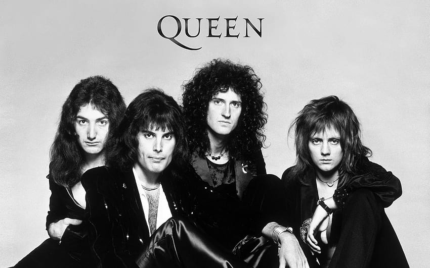

Sejarah
Band Queen memiliki sejarah panjang dalam dunia musik rock, menjadi salah satu legenda yang tak tergantikan. Mereka terbentuk pada tahun 1970-an dan segera meraih ketenaran global.
Queen adalah band favorit saya
Band Queen memiliki sejarah panjang dalam dunia musik rock, menjadi salah satu legenda yang tak tergantikan. Mereka terbentuk pada tahun 1970-an dan segera meraih ketenaran global.
Personil utama Queen terdiri dari Freddie Mercury (vokal), Brian May (gitar), John Deacon (bass), dan Roger Taylor (drum). Mereka membentuk tim yang tak tertandingi dalam musik rock.
Queen menciptakan sejumlah lagu fenomenal yang meliputi "Bohemian Rhapsody," "We Will Rock You," "Another One Bites the Dust," dan banyak lagi. Lagu-lagu ini menjadi bagian integral dari sejarah musik rock.
Konser Live Aid Queen adalah penampilan luar biasa oleh Queen pada 13 Juli 1985 di London dan Philadelphia. Dipimpin oleh Freddie Mercury, mereka memberikan penampilan legendaris yang menjadi salah satu momen puncak dalam sejarah musik rock, mengumpulkan dana untuk korban kelaparan di Afrika.
Konser-konser Queen selalu menjadi pengalaman luar biasa. Salah satu konser legendaris mereka adalah di stadion Wembley pada tahun 1986, yang dianggap sebagai salah satu penampilan panggung terbaik dalam sejarah musik.